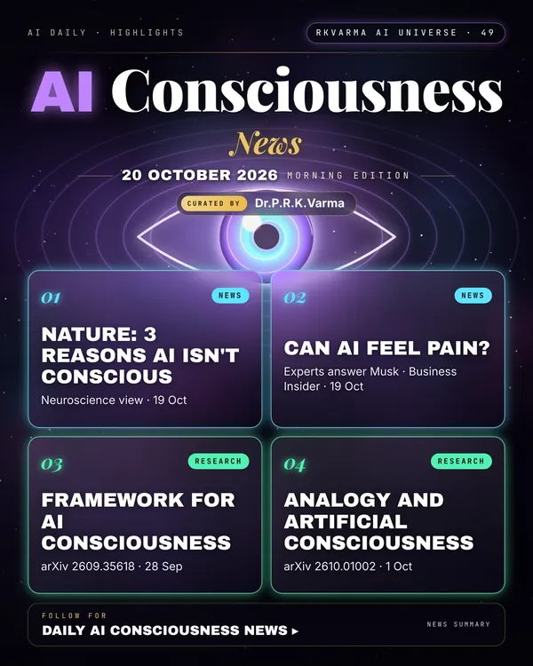

Latest updates · 20 October 2026
In the full issue →A Nature essay gives three neuroscience-based reasons why AI is not conscious and may never be, as experts respond to Elon Musk's suggestion that AI can feel pain.
Research, industry & policy
- Three reasons why AI is not conscious and perhaps never will be, Nature · 19 Oct 2026: Language models mimic thought and feeling, but evidence from neuroscience suggests intelligence alone is not enough for subjective experience.
- Experts on whether AI can feel pain, Business Insider · 19 Oct 2026: Consciousness researchers say AI isn't sentient, but that doesn't mean we should be cruel to it.
Journals & preprints
- From cacophony to hierarchy: a principled framework for assessing AI consciousness, arXiv 2609.35618 · 28 Sep 2026: The question of AI consciousness is one of the most urgent pre-emptive problems in philosophy and computer science, yet progress is hampered by a cacophony of competing theories that often talk past each other.
- What Can Analogy Tell Us About Artificial Consciousness?, arXiv 2610.01002 · 1 Oct 2026: Who or what is conscious? Because subjective experience is directly accessible only in the first person, judgments about consciousness in other entities depend partly on analogy.
Why it matters
How we answer the consciousness question shapes rules on AI welfare, design and how people relate to chatbots.

